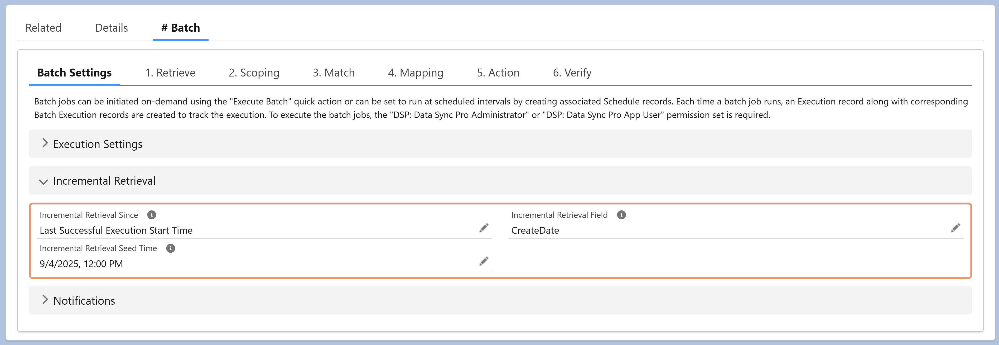

To implement incremental retrieval, select an option for
Incremental Retrieval Since. This adds the filter
SystemModstamp > (Last Execution Time) to the Retrieve query
during execution, based on the option selected. Optionally, to specify a
custom field instead of SystemModstamp, enter the field's API
name in Incremental Retrieval Field. You can also set an
Incremental Retrieval Seed Time to define the starting point
for the initial incremental batch execution.
Note: To modify the Retrieve query, first clear the Incremental Retrieval Since field. After updating the query, re-populate the field and refresh the page to ensure the changes are applied correctly.
